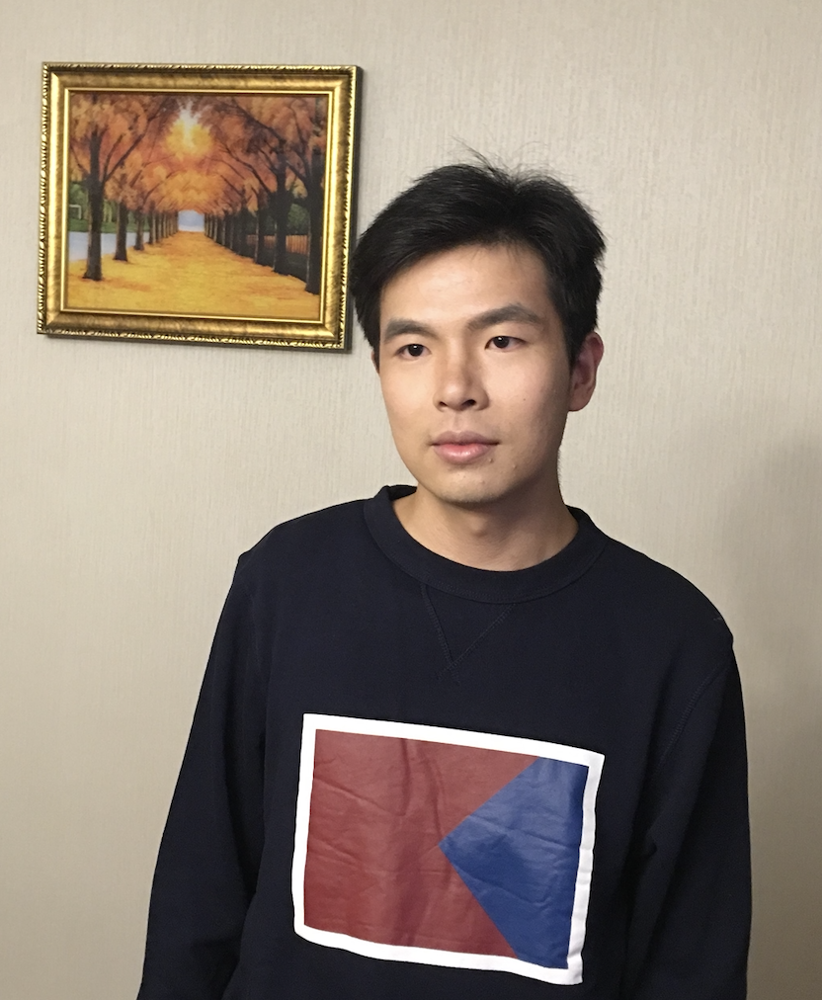

Zhen Zhang
|
 |

Biography
Zhen Zhang is pursuing his Ph.D. degree in Computer Science and Technology at Zhejiang University. His research interests are mainly in graph representation learning, recommender systems and deep reinforcement learning.
News
- [07/2021]. Our paper Image Search with Text Feedback by Deep Hierarchical Attention Mutual Information Maximization is accepted by MM 2021.
- [06/2021]. I defended my thesis on Multi-granularity Graph Representation Learning with Neural Networks.
- [06/2021]. Our paper Hierarchical Multi-View Graph Pooling with Structure Learning is accepted by TKDE.
- [05/2021]. Our paper H2MN: Graph Similarity Learning with Hierarchical Hypergraph Matching Networks is accepted by KDD 2021.
- [02/2021]. Our paper TigeCMN: On Exploration of Temporal Interaction Graph Embedding via Coupled Memory Neural Networks is accepted by Neural Networks.
Publications
- Chunbin Gu, Jiajun Bu, Zhen Zhang, Zhi Yu, Dongfang Ma, Wei Wang. Image Search with Text Feedback by Deep Hierarchical Attention Mutual Information Maximization. To Appear in Proceedings of the 29th ACM International Conference on Multimedia (MM 2021). [code]
- Zhao Li, Yixin Liu, Zhen Zhang, Shirui Pan, Jianliang Gao, Jiajun Bu. Cyclic Label Propagation for Graph Semi-supervised Learning. World Wide Web Journal (WWWJ 2021).
- Zhen Zhang, Jiajun Bu, Martin Ester, Jianfeng Zhang, Zhao Li, Chengwei Yao, Huifen Dai, Zhi Yu, Can Wang. Hierarchical Multi-View Graph Pooling with Structure Learning. IEEE Transactions on Knowledge and Data Engineering (TKDE 2021) .[code]
- Zhen Zhang, Jiajun Bu, Martin Ester, Zhao Li, Chengwei Yao, Zhi Yu, Can Wang. H2MN: Graph Similarity Learning with Hierarchical Hypergraph Matching Networks. In Proceedings of the 27th ACM SIGKDD Conference on Knowledge Discovery and Data Mining (KDD 2021). [code]
- Sheng Zhou, Xin Wang, Martin Ester, Bolang Li, Chen Ye, Zhen Zhang, Can Wang, Jiajun Bu. Direction-Aware User Recommendation Based on Asymmetric Network Embedding. ACM Transactions on Information System (TOIS 2021). [code]
- Zhen Zhang, Jiajun Bu, Zhao Li, Chengwei Yao, Can Wang, Jia Wu. TigeCMN: On Exploration of Temporal Interaction Graph Embedding via Coupled Memory Neural Networks. Elsevier Neural Networks (Neural Networks 2021). [code]
- Ning Ma, Jiajun Bu, Jieyu Yang, Zhen Zhang, Chengwei Yao, Zhi Yu, Sheng Zhou, Xifeng Yan. Adaptive-Step Graph Meta-Learner for Few-Shot Graph Classification. In Proceedings of the 29th ACM International Conference on Information & Knowledge Management (CIKM 2020). [code]
- Zhen Zhang, Jiajun Bu, Martin Ester, Jianfeng Zhang, Chengwei Yao, Zhao Li, Can Wang. Learning Temporal Interaction Graph Embedding via Coupled Memory Networks. In Proceedings of The Web Conference 2020 (WWW 2020). [code]
- Sheng Zhou, Jiajun Bu, Zhen Zhang, Can Wang, Lingzhou Ma, Jianfeng Zhang. Cross Multi-Type Objects Clustering in Attributed Heterogeneous Information Network. Elsevier Knowledge-Based Systems (KBS 2020).
- Zhen Zhang, Jiajun Bu, Martin Ester, Jianfeng Zhang, Chengwei Yao, Zhi Yu, Can Wang. Hierarchical Graph Pooling with Structure Learning. In arXiv:1911.05954, 2019. [code]
- Zhen Zhang, Hongxia Yang, Jiajun Bu, Sheng Zhou, Pinggang Yu, Jianwei Zhang, Martin Ester, Can Wang. ANRL: Attributed Network Representation Learning via Deep Neural Networks. In Proceedings of the Twenty-Seventh International Joint Conference on Artificial Intelligence (IJCAI 2018). [code]
Experiences
Professional Service